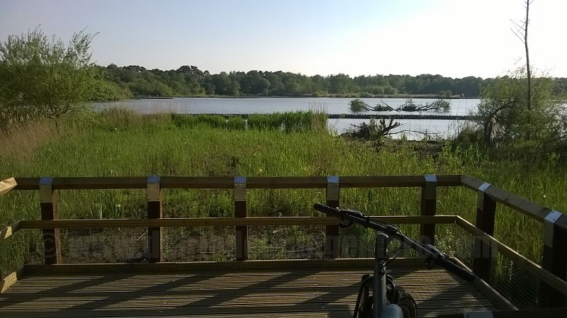
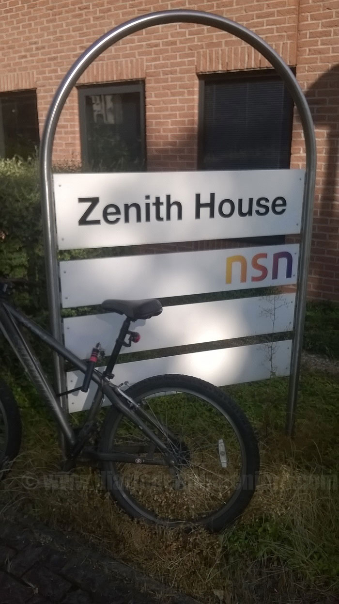

It is a small town in the district of Hampshire famous for having the largest sharp sweet lake in England. Fleet is rated as one of the best cities to live in the UK, having the award in recent editions by the Halifax Quality of Life study.

I was working at NSN which is located in Ancells Park Businees Park, next to big technology companies like Anite or British Telecom.
It is a city that has 2 large business areas and focused on the technology sector the majority.

It should be noted that most of the people who work there are foreigners or people far away from England.
This is because britihs usually guide their career more financially and they usually prefer to work in London where people earn more money.
In NSN I work in the adaptation of a new radio module for all the BTS maintaining all the improvements of the last designs doubling the capacity of band.
At the end of 2014 the company informs that they will move the project to India for its new strategic plan in which costs were being reduced, offering various options to move the people of the department.
Even so few were those who accepted mobility in England and almost null those who went to the new site.
Both Nokia Networks and Ericsson are currently threatened to disappear, due to the strong push of Hawei, so they both sold their share Mobile.
Only maintained the station where there is a greater margin of profits and have proceeded to relocate the companies outside Europe, keeping the necessary personnel, commercial, sales and logistics, management and design of architectures and leaving the manufacturing part and also design in recent times to emerging countries that can compete with China's prices.
Nokia was in fact the last to succumb to the drag of China with its Lumia phones, but at the end the reality can with the utopia and it had to disappear.
Fleet is not a town that has many things to do, I was living a year and a half but after a month and I had the best view.
However it is well connected with London by train and road, making it a very attractive town since you have a great peace and you can have London within easy reach.
The only bad thing is the cost of traveling by train to London which even with the discount cards goes for about 20 pounds round trip, being 45 km far from the city.
As soon as I arrived I got a second hand bike and grace to it I could move easily.
Remember that in any town or town in England however small sites are usually quite far away since they are cities that extend in surface, formed by many small houses with great gardens, and with few towers in height.
In Fleet the maximum there were 3 plants.
I was living the first months with a Chinese woman and an American, and I was accustomed to dealing with people from other countries although in this case I had some problems around.
At the same time I was expanding my circle of friends in the city that basically were people of my age of my work.
My friends were from Southern Europe like me, Italian, Greek and Spanish.
 Later he would change house and share flat with an Indian and an Indian, and later with a Nigerian.
All engineers but educated in his country except the Indian who for his English and his way of speaking, it looks like he was British.
In this last house apart from learning many things like in the previous houses I was quite good because of the open mentality of these people.
I remember going to play soccer every Sunday with my roommates and being long afternoons.
There almost all football fields are grassy because due to constant rains they don´t need maintenance.
Later he would change house and share flat with an Indian and an Indian, and later with a Nigerian.
All engineers but educated in his country except the Indian who for his English and his way of speaking, it looks like he was British.
In this last house apart from learning many things like in the previous houses I was quite good because of the open mentality of these people.
I remember going to play soccer every Sunday with my roommates and being long afternoons.
There almost all football fields are grassy because due to constant rains they don´t need maintenance.

© 2016 - All Rights Reserved - Diseñada por Sergio López Martínez
![[Valid RSS]](https://www.feedvalidator.org/images/valid-rss-rogers.png "Validate my RSS feed")